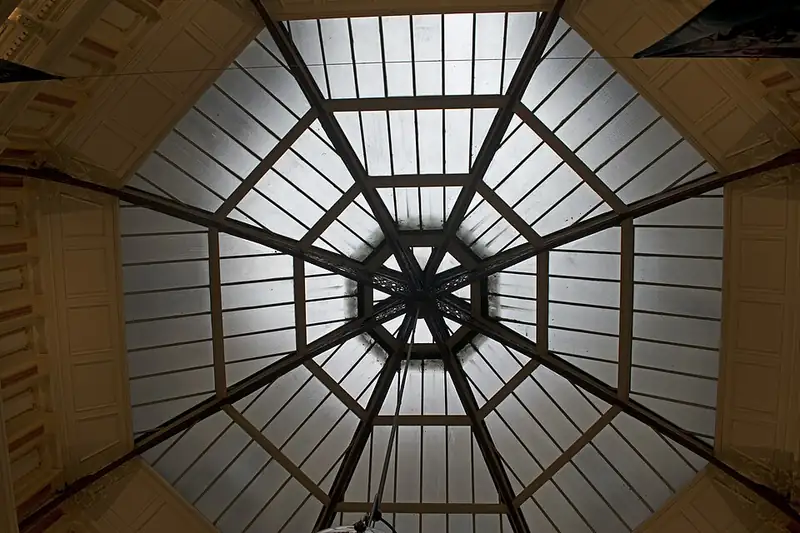

Block Arcade, Melbourne
Block Arcade is a shopping centre in Melbourne, in the Melbourne City Council area, handy for a rainy day or a quick stop. Collins St/Elizabeth St #2 (tram) is a 1-minute walk away and the nearest public toilet is about 249 m away. Opening hours: opening_hours: Mo-Th 08:00-18:00; Fr 08:00-20:00; Sa 08:00-17:00; Su 09:00-17:00.


Quick facts
- Opening hours
- Mon–Thu 8am–6pm, Fri 8am–8pm, Sat 8am–5pm, Sun 9am–5pm
- Address
- 282 Collins Street, Melbourne, VIC 3000
- Phone
- +61 3 9654 5244
- Toilets
- 249 m away
- Public transport
- Collins St/Elizabeth St #2, tram (routes 19, 57, 59), 1 min walk
This page has basic info from the map: name, location and type. We have not checked the details yet. Know this place? Tell us.
Details
- Opening hours
- opening_hours: Mo-Th 08:00-18:00; Fr 08:00-20:00; Sa 08:00-17:00; Su 09:00-17:00 (OpenStreetMap)
- Toilets
- no (OpenStreetMap)
- Phone
- +61 3 9654 5244 (OpenStreetMap)
- Address
- 282 Collins Street, Melbourne, VIC 3000 (OpenStreetMap)
Questions parents ask
- What are the opening hours of Block Arcade?
- Block Arcade is open Mon–Thu 8am–6pm, Fri 8am–8pm, Sat 8am–5pm, Sun 9am–5pm. Hours can change on public holidays, so check before you go.
- Where is Block Arcade?
- Block Arcade is in Melbourne, Victoria, at 282 Collins Street, Melbourne, VIC 3000.
- Are there toilets at Block Arcade?
- The nearest public toilet is about 249 m away.
- How do I get to Block Arcade by public transport?
- The closest stop is Collins St/Elizabeth St #2 (routes 19, 57, 59), a 1-minute walk.
- What is the phone number for Block Arcade?
- Call Block Arcade on +61 3 9654 5244.
Nearby places
- Le Petit Chateau
Cafe or restaurant · MelbourneToilet nearbyTram 2 min walk
- Barbarella
Cafe or restaurant · MelbourneToilet nearbyTram 2 min walk
- Collins Arcade
Shopping centre · MelbourneToilet nearbyTram 2 min walk
- Galleria
Shopping centre · MelbourneToilet nearbyTram 2 min walk
- City Library
Library · MelbourneToilet nearbyFreeTram 2 min walk